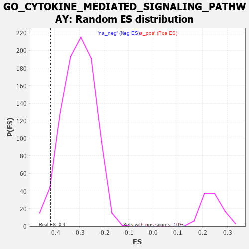

| | | Dataset | 7d |
| Phenotype | NoPhenotypeAvailable |
| Upregulated in class | na_neg |
| GeneSet | GO_CYTOKINE_MEDIATED_SIGNALING_PATHWAY |
| Enrichment Score (ES) | -0.41653726 |
| Normalized Enrichment Score (NES) | -1.3726892 |
| Nominal p-value | 0.035555556 |
| FDR q-value | 0.3765019 |
| FWER p-Value | 1.0 |
Table: GSEA Results Summary
 Fig 1: Enrichment plot: GO_CYTOKINE_MEDIATED_SIGNALING_PATHWAY
Fig 1: Enrichment plot: GO_CYTOKINE_MEDIATED_SIGNALING_PATHWAY
Profile of the Running ES Score & Positions of GeneSet Members on the Rank Ordered List
| PROBE | GENE SYMBOL | GENE_TITLE | RANK IN GENE LIST | RANK METRIC SCORE | RUNNING ES | CORE ENRICHMENT | | 1 | UBE2K | | | 94 | 1.739 | 0.0115 | No |
| 2 | IRS1 | | | 98 | 1.659 | 0.0335 | No |
| 3 | SPI1 | | | 162 | 1.182 | 0.0414 | No |
| 4 | RHOU | | | 210 | 1.031 | 0.0493 | No |
| 5 | DCST1 | | | 237 | 0.959 | 0.0589 | No |
| 6 | HGF | | | 276 | 0.870 | 0.0658 | No |
| 7 | FSCN1 | | | 297 | 0.830 | 0.0745 | No |
| 8 | CNOT7 | | | 348 | 0.750 | 0.0782 | No |
| 9 | MX1 | | | 578 | 0.604 | 0.0572 | No |
| 10 | PDCD4 | | | 941 | 0.497 | 0.0179 | No |
| 11 | CTR9 | | | 964 | 0.492 | 0.0217 | No |
| 12 | AKT1 | | | 1040 | 0.476 | 0.0186 | No |
| 13 | YAP1 | | | 1041 | 0.475 | 0.0250 | No |
| 14 | RBM15 | | | 1057 | 0.473 | 0.0294 | No |
| 15 | SRC | | | 1128 | 0.459 | 0.0267 | No |
| 16 | PSMD7 | | | 1152 | 0.454 | 0.0299 | No |
| 17 | PSMD2 | | | 1181 | 0.450 | 0.0324 | No |
| 18 | RBX1 | | | 1445 | 0.401 | 0.0044 | No |
| 19 | SOS1 | | | 1547 | 0.384 | -0.0033 | No |
| 20 | PSMD4 | | | 1811 | 0.335 | -0.0323 | No |
| 21 | TRIM5 | | | 1852 | 0.327 | -0.0329 | No |
| 22 | PSMD6 | | | 1858 | 0.326 | -0.0292 | No |
| 23 | SMAD4 | | | 1860 | 0.326 | -0.0249 | No |
| 24 | CCR4 | | | 1959 | 0.312 | -0.0332 | No |
| 25 | IRF4 | | | 2054 | 0.298 | -0.0411 | No |
| 26 | PSME4 | | | 2143 | 0.285 | -0.0485 | No |
| 27 | SYK | | | 2186 | 0.278 | -0.0501 | No |
| 28 | PSMF1 | | | 2251 | 0.268 | -0.0546 | No |
| 29 | AIP | | | 2281 | 0.263 | -0.0547 | No |
| 30 | MIF | | | 2357 | 0.252 | -0.0609 | No |
| 31 | PSMD5 | | | 2560 | 0.218 | -0.0836 | No |
| 32 | SLIT2 | | | 2724 | 0.195 | -0.1017 | No |
| 33 | RORA | | | 2730 | 0.193 | -0.0998 | No |
| 34 | CUL1 | | | 2735 | 0.193 | -0.0977 | No |
| 35 | PPIA | | | 2754 | 0.190 | -0.0974 | No |
| 36 | FER | | | 2803 | 0.183 | -0.1010 | No |
| 37 | LIFR | | | 2948 | 0.158 | -0.1172 | No |
| 38 | PIAS4 | | | 3034 | 0.145 | -0.1261 | No |
| 39 | ABCE1 | | | 3051 | 0.143 | -0.1262 | No |
| 40 | PSMD9 | | | 3179 | 0.125 | -0.1407 | No |
| 41 | TAB1 | | | 3351 | 0.097 | -0.1611 | No |
| 42 | MED1 | | | 3405 | 0.089 | -0.1667 | No |
| 43 | TRAIP | | | 3408 | 0.088 | -0.1657 | No |
| 44 | MAPK3 | | | 3589 | 0.062 | -0.1878 | No |
| 45 | CBL | | | 3621 | 0.056 | -0.1910 | No |
| 46 | SKP1 | | | 3663 | 0.049 | -0.1955 | No |
| 47 | CSF1 | | | 4074 | -0.019 | -0.2474 | No |
| 48 | TRAF1 | | | 4104 | -0.024 | -0.2508 | No |
| 49 | CRK | | | 4139 | -0.031 | -0.2547 | No |
| 50 | GFI1 | | | 4168 | -0.037 | -0.2578 | No |
| 51 | TIMP1 | | | 4209 | -0.043 | -0.2623 | No |
| 52 | PSME3 | | | 4280 | -0.056 | -0.2704 | No |
| 53 | BAG4 | | | 4314 | -0.061 | -0.2738 | No |
| 54 | RALA | | | 4416 | -0.079 | -0.2856 | No |
| 55 | CDC37 | | | 4446 | -0.084 | -0.2881 | No |
| 56 | ILK | | | 4510 | -0.096 | -0.2949 | No |
| 57 | GATA3 | | | 4614 | -0.120 | -0.3063 | No |
| 58 | MTAP | | | 4675 | -0.133 | -0.3122 | No |
| 59 | RAP1B | | | 4706 | -0.140 | -0.3141 | No |
| 60 | PIM1 | | | 4776 | -0.152 | -0.3208 | No |
| 61 | CNN2 | | | 4828 | -0.163 | -0.3251 | No |
| 62 | SLIT3 | | | 4890 | -0.175 | -0.3305 | No |
| 63 | CASP1 | | | 4932 | -0.185 | -0.3332 | No |
| 64 | FZD4 | | | 4940 | -0.186 | -0.3316 | No |
| 65 | ACKR4 | | | 4981 | -0.194 | -0.3341 | No |
| 66 | MMP9 | | | 5108 | -0.227 | -0.3471 | No |
| 67 | SPHK1 | | | 5576 | -0.339 | -0.4019 | No |
| 68 | WNK1 | | | 5650 | -0.362 | -0.4063 | No |
| 69 | PSMD1 | | | 5674 | -0.367 | -0.4043 | No |
| 70 | CASP8 | | | 5678 | -0.369 | -0.3997 | No |
| 71 | CDIP1 | | | 5684 | -0.370 | -0.3953 | No |
| 72 | MADD | | | 5686 | -0.371 | -0.3905 | No |
| 73 | MX2 | | | 5745 | -0.390 | -0.3926 | No |
| 74 | BBS4 | | | 5806 | -0.407 | -0.3947 | No |
| 75 | STAT4 | | | 5867 | -0.424 | -0.3966 | No |
| 76 | CXCR5 | | | 5954 | -0.456 | -0.4014 | No |
| 77 | PTPRN | | | 6007 | -0.474 | -0.4017 | No |
| 78 | UBB | | | 6090 | -0.503 | -0.4053 | No |
| 79 | EGR1 | | | 6165 | -0.527 | -0.4076 | No |
| 80 | CDC42 | | | 6236 | -0.548 | -0.4091 | Yes |
| 81 | STK39 | | | 6274 | -0.563 | -0.4063 | Yes |
| 82 | NCAM1 | | | 6318 | -0.582 | -0.4039 | Yes |
| 83 | ELF1 | | | 6328 | -0.587 | -0.3971 | Yes |
| 84 | BIRC3 | | | 6366 | -0.603 | -0.3937 | Yes |
| 85 | BBS2 | | | 6383 | -0.608 | -0.3875 | Yes |
| 86 | ISG15 | | | 6385 | -0.608 | -0.3795 | Yes |
| 87 | UBE2N | | | 6407 | -0.621 | -0.3738 | Yes |
| 88 | SOX2 | | | 6477 | -0.652 | -0.3738 | Yes |
| 89 | OTOP1 | | | 6562 | -0.690 | -0.3752 | Yes |
| 90 | ROBO1 | | | 6577 | -0.699 | -0.3675 | Yes |
| 91 | ARF1 | | | 6583 | -0.701 | -0.3587 | Yes |
| 92 | RFFL | | | 6674 | -0.749 | -0.3601 | Yes |
| 93 | LRP8 | | | 6931 | -0.889 | -0.3806 | Yes |
| 94 | CCR2 | | | 7003 | -0.939 | -0.3770 | Yes |
| 95 | PXDN | | | 7104 | -1.001 | -0.3763 | Yes |
| 96 | CIB1 | | | 7280 | -1.152 | -0.3830 | Yes |
| 97 | CYLD | | | 7333 | -1.206 | -0.3733 | Yes |
| 98 | UBC | | | 7410 | -1.274 | -0.3658 | Yes |
| 99 | TRAF4 | | | 7573 | -1.514 | -0.3660 | Yes |
| 100 | RNF31 | | | 7744 | -1.895 | -0.3621 | Yes |
| 101 | CASP3 | | | 7747 | -1.902 | -0.3367 | Yes |
| 102 | ST18 | | | 7780 | -2.007 | -0.3137 | Yes |
| 103 | TRAF6 | | | 7818 | -2.157 | -0.2894 | Yes |
| 104 | TRAF2 | | | 7861 | -2.481 | -0.2613 | Yes |
| 105 | MMP2 | | | 7875 | -2.574 | -0.2282 | Yes |
| 106 | FYN | | | 7881 | -2.622 | -0.1935 | Yes |
| 107 | TRAF3 | | | 7886 | -2.695 | -0.1577 | Yes |
| 108 | PLCB1 | | | 7904 | -2.841 | -0.1216 | Yes |
| 109 | PSMD3 | | | 7907 | -2.887 | -0.0829 | Yes |
| 110 | PSMD8 | | | 7931 | -3.286 | -0.0415 | Yes |
| 111 | TRAF5 | | | 7938 | -3.448 | 0.0042 | Yes |
Table: GSEA details [plain text format]

Fig 2: GO_CYTOKINE_MEDIATED_SIGNALING_PATHWAY: Random ES distribution
Gene set null distribution of ES for GO_CYTOKINE_MEDIATED_SIGNALING_PATHWAY